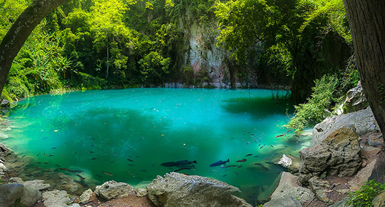
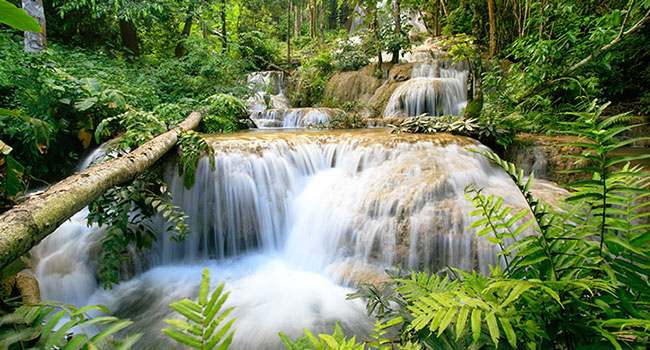
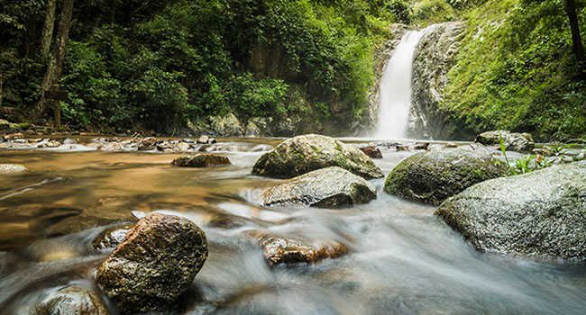
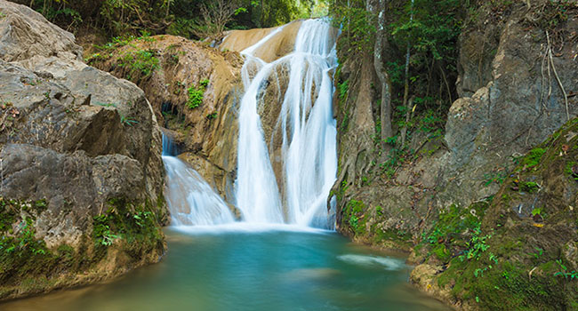
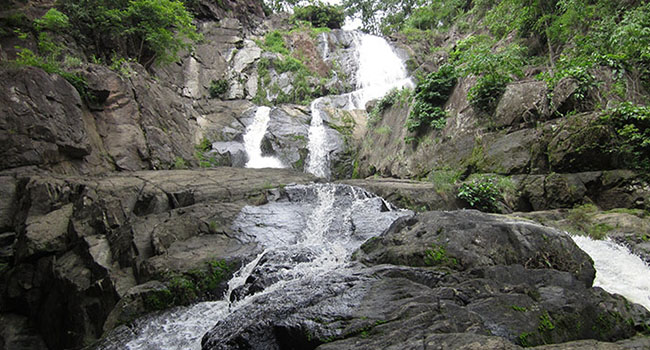

1.หล่มภูเขียว
หล่มภูเขียว เป็นที่เที่ยวในป่าลึกที่ไม่ควรพลาดสำหรับนักเที่ยวป่าขาลุย
ซึ่งที่แห่งนี้เป็นแอ่งน้ำธรรมชาติจากป่าเขาต้นน้ำ มีปลาพันธุ์หายากต่างๆ อาศัยอยู่นี้ด้วย
สิ่งที่พิเศษของหล่มภูเขียวก็คือ ธารน้ำใสเป็นสีฟ้าเขียวมรกต
เมื่อคุณเห็นแล้วจะรู้สึกตะลึงในความสวยงามที่เกินคำบรรยาย
หล่มภูเขียวจึงเป็นแหล่งท่องเที่ยว Unseen ของลำปางเลยทีเดียว
ที่ตั้ง : หล่มภูเขียว อุทยานแห่งชาติถ้ำผาไทที่ 1 อ.งาว จ.ลำปาง
2.น้ำตกเกาฟุ
น้ำตกเกาฟุ เป็นน้ำตกที่ถูกสร้างขึ้นโดยฝีมือมนุษย์
ซึ่งมีจุดประสงค์เพื่อเพิ่มแหล่งน้ำธรรมชาติให้มีมากขึ้นในอุทยานถ้ำผาไท
โดยเป็นน้ำตกที่มีน้ำไหลตลอดปี น้ำตกเกาฟุมีความสำคัญต่อระบบนิเวศเป็นอย่างมากในป่าต้นน้ำ
ทำให้ปัจจุบันน้ำตกนี้กลายเป็นแหล่งท่องเที่ยวที่มีชื่อเสียงอีกแห่งของลำปาง
ที่ตั้ง : น้ำตกเกาฟุ อุทยานแห่งชาติถ้ำผาไทที่ 1 อ.งาว จ.ลำปาง


3.น้ำตกแจ้ซ้อน
น้ำตกแจ้ซ้อน เป็นน้ำตกขนาดใหญ่ที่ตั้งอยู่ในอุทยานแห่งชาติแจ้ซ้อน
ซึ่งเป็นที่รู้จักของนักท่องเที่ยวเป็นอย่างดี
นอกจากจะเต็มไปด้วยธรรมชาติป่าไม้ที่สวยงามแล้ว
ที่นี่ยังมีบ่อน้ำพุร้อนธรรมชาติให้มาแช่น้ำร้อนอย่างสบาย
และที่สำคัญอุทยานแจ้ซ้อนยังมีน้ำตกภายในอุทยานอีก 2 แห่งคือ น้ำตกแม่มอญ
เป็นน้ำตกขนาดใหญ่และเป็นแหล่งต้นน้ำในอุทยานแจ้ซ้อน และ น้ำตกแม่เปียก
น้ำตกขนาดเล็กที่รับน้ำมาจากน้ำตกแจ้ซ้อน
ที่ตั้ง : น้ำตกแจ้ซ้อน อุทยานแห่งชาติแจ้ซ้อน อ.เมืองปาน จ.ลำปาง
4.น้ำตกวังแก้ว
ที่อุทยานแห่งชาติดอยหลวง มีน้ำตกแห่งหนึ่งที่นับว่าสวยงามที่สุดในลำปางก็คือ น้ำตกวังแก้ว
ซึ่งเป็นน้ำตกขนาดใหญ่ในป่าดิบชื้นอันอุดมสมบูรณ์ น้ำตกมีทั้งหมด 11 ชั้น มีความสูง 500
เมตร น้ำตกมีน้ำไหลตลอดปี เป็นอีกสถานที่ยอดนิยมของนักท่องเที่ยว
เนื่องจากมีไฮไลท์สำคัญอยู่ที่ชั้นบนสุดของน้ำตก คือ
ถ้ำขนาดใหญ่ที่สามารถมองเห็นวิวบนเขาได้ไกลถึงกว๊านพะเยาเลยทีเดียว
ที่ตั้ง : น้ำตกวังแก้ว อุทยานแห่งชาติดอยหลวง อ.วังเหนือ จ.ลำปาง


5.น้ำตกแม่วะ
น้ำตกแม่วะ ตั้งอยู่ในอุทยานแห่งชาติแม่วะ มีทั้งหมด 9 ชั้น
แต่ละชั้นก็จะมีความสวยงามแตกต่างกันออกไป โดยน้ำตกชั้นที่ 8 และชั้นที่ 9
จะมีความสวยงามมากที่สุด น้ำตกแม่วะ
นับว่าเป็นแหล่งท่องเที่ยวที่ผู้สัญจรผ่านอำเภอเถินมักจะแวะเที่ยวที่นี่กันเสมอ
ที่ตั้ง : อุทยานแห่งชาติแม่วะ อ.เถิน จ.ลำปาง
แหล่งที่มา : www.govivigo.com